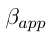
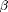
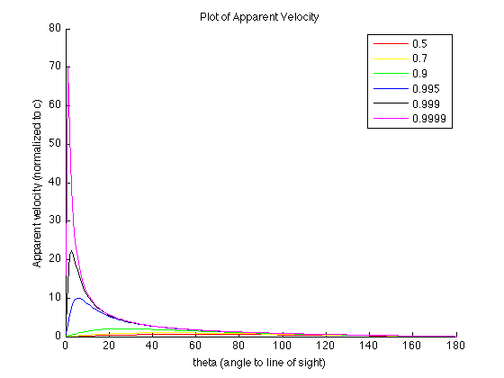
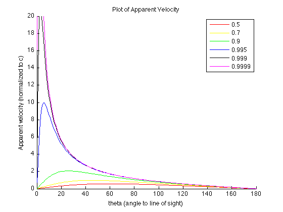

Plotting the apparent velocity
Here, betaA() is a user-specified function which returns the value of  based on the value of  and we put in. You need to write your own betaA function M-file before you can continue!
You can test your betaA function by using =0 and =90:
bA = betaA(0.99, 0)
bA =
0
bA = betaA(0.99, 90)
bA =
0.9900
Are these results what you expected?
Now, get prepared to plot the transverse velocity. First, let's create an array for using linspace:
theta = linspace(0, 180, 200);
Also create an array of values:
beta = [0.5, 0.7, 0.9, 0.995, 0.999, 0.9999];
and an array containing color options for plot:
clrs = ['r', 'y', 'g', 'b', 'k', 'm'];
Don't forget to set up a figure window:
figure(1); clf;
hold on;
Now let's make plot using for loop to save some typing. The for loop repeats a group of statements by a fixed, predetermined number of times, and a matching end delineates the statements:
for i = 1:6 bA = betaA(beta(i),theta); plot(theta, bA, clrs(i)) end
And you can add graphic info AFTER the for loop:
title('Plot of Apparent Velocity') xlabel('theta (angle to line of sight)') ylabel('Apparent velocity (normalized to c)') legend('0.5', '0.7', '0.9', '0.995', '0.999', '0.9999', 'Location', 'NorthEast');
You can set the limits of the vertical axis so you can see structure of the equations for small beta's:
ylim([0 20])